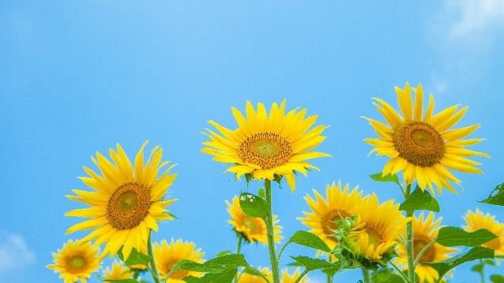

かつて塾講師だった頃、私は高校受験を目指す中3生をもっぱら教えていたので親から以下のような言葉をよく聞かされていました。
「受験生だというのに部活、部活で疲れ切って家でも寝てばかり。こんなんでいいのでしょうか」
「中3になって少しは勉強するようになったが、まだまだ本気で打ち込んでるようには思えない・・・」
「塾の宿題しかやってないようだが、このままでよいのでしょうか」
これは主に1学期中に寄せられる親の「心配」ですが、親にしてみれば中3になったらもう少し「受験生としての自覚」が出てくるかと期待したが、現実の我が子は受験生のあるべき姿からほど遠い。どうすればよいのか！？
そういった悩みです。
要するに親の期待値と実際の我が子の間にはギャップがある。そこに親の焦燥感がにじみ出てくるということです。
そして多くの親－主にお母さんたち－は嘆息しながらこう言うのです。
「1学期中は部活も忙しいから仕方ない。部活の大会が終わる夏からの頑張りに期待します」
そうですね。中3生は部活や様々な活動でも最上級として他をリードする役割を担っています。また最後の大会にかける意気込みも強く必然的にエネルギーの大半をそれらの活動に割くことになる。
親もその辺の事情を理解しているので上のような発言になるわけです。
「今は仕方ない。勉強だけが全てではない。当面はガマンしてそちらを優先させてあげよう。その代り部活が終わったらその時は受験勉強をガッツリやってもらおう！」
こうして親の期待は夏に持ち越されます。
部活の大会などが終了する夏休みからは、我が子が立派な（？）受験生に変身しバリバリ勉強する姿を夢見ながら。
昔から「受験勉強は夏がスタート」と言うし。
ところが、親たちのこういう期待と夢は残念ながら十分満たされることはないでしょう。期待は外れ夢は打ち砕かれる
夏が終わればそんな苦い現実を多くの親は味わうのです。
部活をやめても勉強するとは限らない
まず、親が認識しなければならないことがいくつかあります。
第1に「部活が終わりさえすれば、我が子も勉強に本腰を入れてくれるだろう」という考え自体、親の勝手な期待であって根拠のないものでしかありません。
「いや違う。ウチの子も部活を引退したら勉強ガンバると言ってたぞ！」と言うかもしれませんが、子どもの言葉も「部活が終わったら勉強するだろう」という自分の期待を述べたに過ぎません。
親子とも「勉強に身が入らないのは部活のせい」としている時点で的が外れています。
これは大人でも同じではないでしょうか。
○○できないのは△△のせいと責任を他に転嫁している限り、その△△という障害が消えたところで結果は言わずもがな。大した成果は上がらないのではないですか。
つまり「部活引退」と「受験勉強スタート」は関係していないのだということです。
1学期中は忙しいから勉強に身が入らなかったのではなく、単に勉強に身が入らなかっただけです。
その証拠に2学期に入ったら、多くの子は「今度はヒマがありすぎて集中できない」状況におちいります。
その一方2学期になっても部活を引退できない一部の生徒は、時間がないことでかえって集中力を増し成績が上がります。（吹奏楽部や陸上部の一部は11月頃に大会があるため）
ですから、部活を引退したのだから勉強するはずという「部活」と「勉強」をリンクさせて過剰に期待するのはやめること。
それは幻想だということを認識して下さい。
夏休みは子どもと対話する
次に認識すべきは「夏だから大切」という、これまた「夏」と「受験生にとって大切」を結びつけて考えることの危険性についてです。
「夏休みは受験勉強にとって大切」という常識は必ずしも真実ではなく、夏期に生徒集めを目論む予備校や塾の宣伝文句から派生してきた「常識」に過ぎません。
もちろん子どもたちの頭を受験モードに切り替える１つのきっかけとしては、夏期講習などに参加することは有効といえます。
しかし大学受験生と違って、高校受験の中３にとっては秋から入試直前つまり10月～1月にかけての時期、いかに集中するかのほうが大切と感じます。
この時期に本気スイッチが入る子のほうが合格しやすい。
ですから夏にガリ勉しなくてもよいのです。
いや、むしろ基本だけをやればいい。来るべき本格的な問題演習に備えて教科書レベルの基本事項をゆっくり時間をかけてやるほうがよいのです。
中1～中2の教科書を再度読み込む。そしてノートにまとめる。内容をしっかり理解する。
もし親がアドバイスするならそのように言って、夏だから死ぬ気でやれなどと過大なプレッシャーを与えないで頂きたいのです。
ハッキリ言って、夏休みの段階では子どもたちは「本気モード」に入っていません。まだまだ表面的な勉強にしか過ぎません。
子どもたちも自分が「受験生」であり「ガンバらなくては」という気持ちはもっています。
頭では分かっているのです。
しかし全力を出すということがどういう状態なのかは分かっていません。身体的に腑に落ちてない状況といってよいでしょう。「夏だから」「受験生だから」「ガンバらなくては」と気持ちだけが空回りしている状態です。
だから親のあり方としてはむしろ勉強そのものより、志望校を決めるための学校見学や説明会に親も同伴し、大人として客観的に我が子に合うかどうか考えアドバイスする時期を考えたほうがよいのです。
夏休みこそ時間を取って親子が対話する。
「なぜ高校へ行くのか」「将来の夢は」「どんな高校が合うのか」「志望校に見合う実力はあるのかどうか」「これからどうしたいのか」
ふだんなかなか話せないそのようなテーマについて親子がじっくり話し合う。そのことが子どもに目的を持たせ、モチベーションアップにつながりその後の勉強にも有効です。
焦らず子どもを信じる
結局のところ－勉強であれ仕事であれ－本人の「やる気スイッチ」が入らないことにはどうしようもありません。
傍でうるさく急かせても本人の自発的な意欲がなければ何も始まらないのです。
そして高校受験生の本当の「やる気スイッチ」は年末から年明けにならないと点火しないというのが私の経験です。
逆にいえばその時期が来たら（個人差はあるものの）自動的に点火するということです。
だから今は、受験受験と大騒ぎするのではなくもっと大きな視点から「将来何になりたいか」「どんな分野方向を目指したいか」を子ども本人に考えさせるような環境づくりを心がけるべきです。そうして自然と「じゃ、そのためには○○高校目指そうかな」となるのがベストです。
その上で夏まではじっくりと基本を学ぶことです。焦る必要はありません。入試問題を分析したり解くなどという小手先のテクニックに走るべきではありません。そういう「焦るタイプ」が2学期以降伸び悩む例を私はたくさん見てきました。問題をたくさん解いたら力がつくというのは幻想です。肝心の実力自体が伴わないからです。
去年の4月、私は某塾のある分教室で中3保護者会にゲストとして参加しました。受験生の親の「心がまえ」について話すよう頼まれたからです。
そこで冒頭に「お子さまたちが本気になる、つまり受験生として目覚める時期はいつだかわかりますか？年明けの1月ですよ」と切りだすと、会場から一斉にヒエ～という悲鳴のようなどよめきが起こりました。
「そんな遅いの！信じられない」という驚きと落胆の悲鳴だったのでしょう。
それでも私が子どもたちの1年間に渡る変化について説明し、親はむしろ焦ったり不安がったりせず大きな視野で見守ることなどを話すと少し安心したようでした。
親の焦りや心配は子どもたちに伝わり、それは子どもたちの心にも焦りや不安を増幅することになりかねない。このほうがむしろ心配だったからです。幸い親の皆さんは理解してくれたようです。
このときの話が利いたせいかは分かりませんが、この教室の受験生たちは今春入試で過去最高の成果をあげたそうです。
受験生の親だからといって特別なことをやる必要はありません。
あえていうなら
「受験生だから・・・」
「夏だから・・・」
「部活が終わったのだから・・・」
だから「こうすべき」「こうあるべき」という先入観や思い込み（常識）にとらわれていないか点検し、とらわれているならそれらをまず捨ててかかりましょう。
そしてもっと大らかに我が子を信じてみてはどうでしょうか。我が子のパワーをです。
「受験」ごときで子どもの運命が大きく左右されることはありません。
それより「自分とは何者であるか」「力を尽くすことはどんなことか」を学ぶ大いなるチャンスが来たと考えて貴重なこの時期を子どもと共に過ごしてみては如何でしょうか。
夏だからと変に意気込むのではなく、まず「受験生としての土台」をきちんと作り上げること。目先の点数を追うのではなく、大きな視野で子どもの将来に向けて今必要なことは何かじっくり考えること。
そうすればこの夏は親子にとってそれまでにないくらいの有意義な時間となるでしょう。